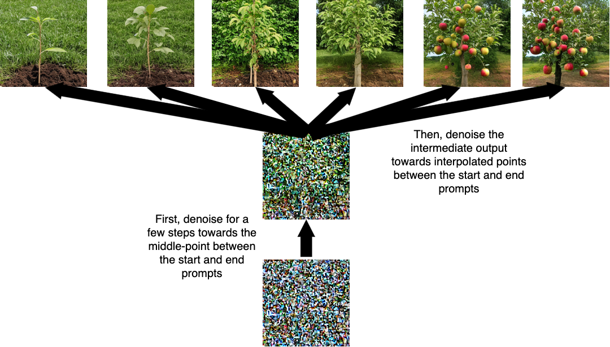

Input
Output
Examples
Run time and cost
Predictions run on Nvidia A100 GPU hardware. Predictions typically complete within 5 minutes. The predict time for this model varies significantly based on the inputs.
Readme
Stable Diffusion Animation
Animate Stable Diffusion by interpolating between two promptsCode: https://github.com/andreasjansson/cog-stable-diffusion/tree/animate
How does it work?
Starting with noise, we then use stable diffusion to denoise for n steps towards the mid-point between the start prompt and end prompt, where
n = num_inference_steps * (1 - prompt_strength). The higher the prompt strength, the fewer steps towards the mid-point.
We then denoise from that intermediate noisy output towards num_animation_frames interpolation points between the start and end prompts. By starting with an intermediate output, the model will generate samples that are similar to each other, resulting in a smoother animation.
Finally, the generated samples are interpolated with Google's FILM (Frame Interpolation for Large Scene Motion) for extra smoothness.